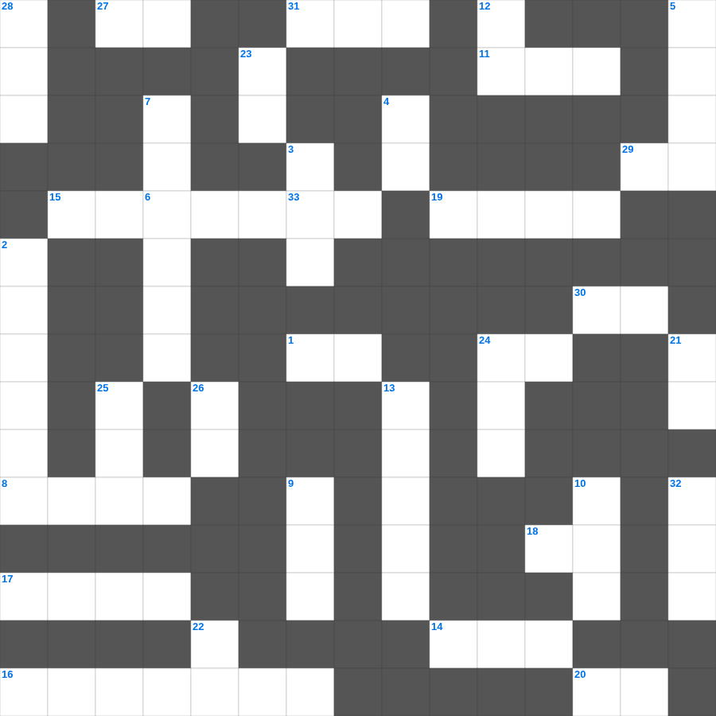

사사기: 왼손잡이 에훗
📌 서비스 정의
십자가로세로는 교회 주보와 주일학교에서 사용할 수 있는 성경 기반 가로세로 퍼즐 서비스입니다. 성경 인물, 사건, 핵심 구절을 바탕으로 제작되었습니다. 온라인 풀이 및 인쇄 기능을 제공합니다.
📖 사사기란?
사사기는 가나안 정복 후 사사들이 이스라엘을 다스리던 시대를 기록합니다. 반복되는 배도와 구원의 패턴이 나타나며 총 21장입니다.
📚 사사기의 주요 사건·주제
에훗과 드보라의 구원 · 기드온의 300명 용사 · 삼손과 들릴라 · 입다의 서원 · 미가의 신상 사건
사사기의 말씀을 퀴즈로 배우는 사사기 말씀 퀴즈입니다. 가로 힌트와 세로 힌트를 보고 35개의 단어를 맞춰보세요. 인쇄도 가능하고 정답 확인도 바로 되니 소그룹 모임이나 가정 예배 시간에도 활용하실 수 있습니다.

📝 가로 힌트
1. 밭에 감추인 이것
6. 엘리야에게 떡을 대접한 사르밧 과자
8. 성경에서 가장 넓은 강
11. 야곱이 라반을 피해 도망치다 세운 돌기둥
14. 언어가 혼잡해져 사람들이 흩어지게 된 탑
15. 나는 알파와 이것이요
16. 선한 사람이 강도 만난 자를 도와준 이야기
17. 예수님이 베드로와 야고보와 요한을 데리고 기도하신 동산
18. 진리의 이것 띠
19. 거짓 이것들이 일어나 많은 사람을 미혹함
20. 고라 자손의 반역 때 땅이 갈라짐
24. 성전 세로 바쳤던 은화
27. 예수님이 우리 죄를 대신해 죽으신 은혜
29. 성령의 9가지 열매 중 두 번째
30. 양 떼를 치는 감독자
31. 세계 최초의 소방관은 누구일까요? (불 속에서 살아남음)
33. 열 처녀 비유에서 준비해야 했던 것
📝 세로 힌트
2. 길가, 돌짝밭, 가시떨기, 좋은 땅 이야기
3. 구름 기둥과 이것 기둥
4. 사망아 너의 승리가 어디 있느냐 사망아 네가 쏘는 것이 어디 있느냐
5. 향유 옥합을 깨뜨려 발을 닦은 것
7. 무화과나무가 마른 이유
9. 야곱이 축복을 받기 위해 팔에 붙인 것
10. 바울이 로마로 가다 난파된 섬
12. 열두 돌을 세운 요단강가 지명
13. 엠마오로 가던 두 제자가 예수님을 알아본 시점
21. 바다의 물고기와 이것들
22. 하나님은 모든 사람이 구원을 받으며 이것을 아는 데 이르기를 원하시느니라
22. 내가 곧 길이요 이것이요 생명이니
23. 성령의 검은 곧 하나님의 이것
24. 예수님이 제자들의 발을 씻기신 일
25. 삼손의 힘의 비밀을 알아낸 여인
26. 잘못을 뉘우치고 하나님께 돌아오는 것
28. 아론의 지팡이에서 핀 꽃
32. 예수님이 베드로에게 던지라고 한 곳
🧩 이 퍼즐에서 배우는 내용
이 퍼즐은 사사기: 왼손잡이 에훗의 핵심 단어와 개념을 자연스럽게 복습할 수 있도록 구성되었습니다. 주일학교 수업이나 개인 성경공부에서 학습 내용을 점검하는 용도로 바로 활용할 수 있습니다.
🧑🏫 교회 교육 자료 활용
이 퍼즐은 주일학교 교재 추천 자료로 활용할 수 있고, 주일학교 주보에 넣기 좋은 분량으로 구성되어 있습니다. 수업용 주일학교 교안에 활동지로 붙이거나, 예배 후 복습용 주일학교 공과교재로 바로 사용할 수 있습니다.
🏷️ 키워드
사사기 말씀 퀴즈, 사사기, 십자가로세로, 성경퀴즈, 말씀퀴즈, 가로세로퍼즐, 주일학교 교재 추천, 주일학교 주보, 주일학교 교안, 주일학교 공과교재